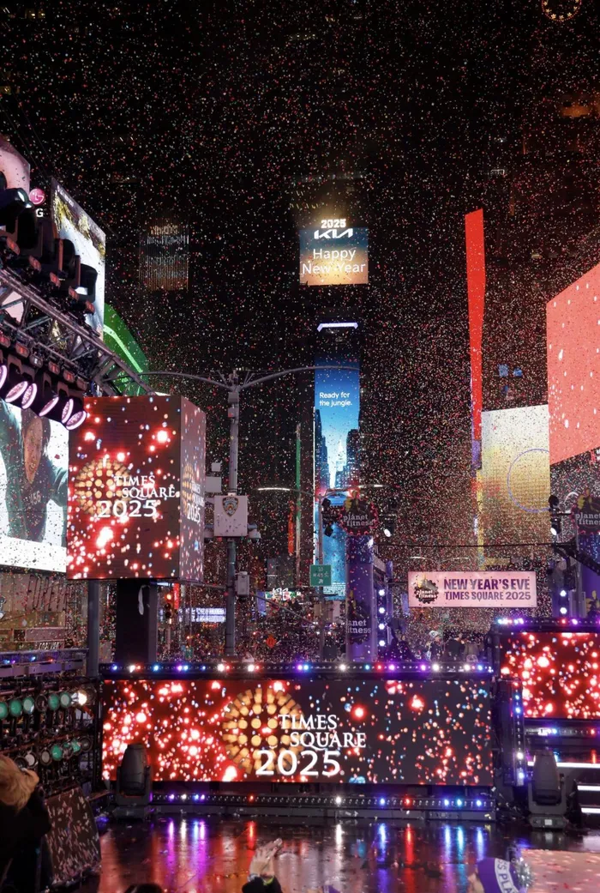

Breaking News
Scientists have discovered a new deep-sea fish with bioluminescent fins off the coast of Australia. The unnamed species is believed to have unique traits that could contribute to future medical research and biotechnology.
Read more about the deep-sea discoveryLunar New Year: Celebrate with us!


Explore the news by choosing one of the images above.
Featured nature image

Video report